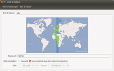
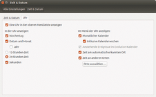
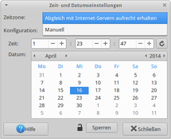

Systemzeit
Dieser Artikel wurde für die folgenden Ubuntu-Versionen getestet:
Dieser Artikel ist größtenteils für alle Ubuntu-Versionen gültig.
Zum Verständnis dieses Artikels sind folgende Seiten hilfreich:
Übersicht¶
Unter Linux muss man prinzipiell zwischen zwei Uhren unterscheiden:
Software-Uhr: das ist die Zeit innerhalb des Linux-Kernels. Sie ist für alle Benutzer und das Betriebssystem selbst von Bedeutung und definiert im laufenden Betrieb die für alle Programme gültige Systemzeit. Sie wird auch manchmal als Betriebssystem-Uhr oder System-Uhr bezeichnet.
Hardware-Uhr: diese Uhr (auch Echtzeituhr, batteriegepufferte Uhr, real time clock (RTC), BIOS clock oder CMOS clock genannt) ist eine Uhr, die unabhängig von allen anderen Komponenten läuft, selbst wenn der Computer heruntergefahren wurde. Im ausgeschalteten Zustand läuft sie weiter und wird beim Systemstart zum Abgleich der Software-Uhr verwendet.
Für eine richtige Anzeige der Uhrzeit ist außer dem die Einstellung der Zeitzone relevant, um die Systemzeit korrekt in die reale Zonenzeit umzurechnen. Sie hilft auch, die Umstellung auf die Sommerzeit automatisch vorzunehmen.
Hinweis:
Ubuntu synchronisiert die Software-Uhr seit Version 16.04 standardmäßig anhand der Zeitzone mit öffentlichen Zeitservern. Allgemeines zum Thema Zeitsynchronisation findet sich im Abschnitt Synchronisation Geht die Systemzeit um genau eine Stunde (oder genau mehrere Stunden) falsch, ist wahrscheinlich eine falsche Zeitzone eingestellt. (Es sollte also nur noch in Ausnahmefällen nötig sein, die Uhrzeit selbst zu korrigieren.)
Konfiguration¶
Anpassungen über die grafische Oberfläche¶
Zu den Einstellungen der Uhrzeit kommt man in aller Regel über einen Rechtsklick auf der Uhr im Desktop-Panel. Dort lassen sich Zeitzone, Synchronisation und nach Wunsch auch manuell die Uhrzeit einstellen.
Alternativ gelangt man bei den meisten grafischen Oberflächen auch über die Systemeinstellungen an diesen Punkt:
|  |  |
| Datum, Zeit | Format, Kalender |
Unity/GNOME 3¶
Ab Ubuntu 11.10 kann man die Zeitsynchronisation direkt über die Systemeinstellung einstellen. Dafür geht man in die Sitzungsanzeige  und klickt auf:
und klickt auf:
"Systemeinstellungen → Zeit und Datum"
Hier kann mit Hilfe des Kippschalters "Netzwerkzeit" die automatische Zeitsynchronisation (de)aktivieren. Außerdem kann man hier noch die Zeitzone und das Datumsformat festlegen.
|  |
| Datum und Uhrzeit bei Xfce |
Xfce¶
Unter Xubuntu erreicht man die Konfiguration über das  Anwendungsmenü:
Anwendungsmenü:
"System -> Datum und Uhrzeit" oder
"Einstellungen -> Datum und Uhrzeit"
Bevor man etwas ändern kann, muss man die Konfiguration zuerst entsperren. Dazu werden Root-Rechte benötigt.
LXDE¶
Lubuntu verwendet das gleiche Programm wie Xfce. Der entsprechende Eintrag im  Anwendungsmenü lautet:
Anwendungsmenü lautet:
"Systemwerkzeuge -> Datum und Uhrzeit" (ab Lubuntu 11.04)
"Einstellungen -> Datum und Uhrzeit" (bis Lubuntu 10.10)
Um die Einstellungen zu ändern, muss vorher die Schaltfläche "Entsperren" betätigt und das Root-Kennwort eingegeben werden.
Anpassungen in einem Terminal¶
Man kann für Datum und Zeit verschiedene Anpassungen im Terminal vornehmen[1].
Übersicht¶
Eine sehr gute Übersicht über die Zeiten erhält man mit
timedatectl
Die Ausgabe zeigt in der 1. Zeile die Software-Zeit und in der 3. Zeile die Hardware-Zeit. In der 4. Zeile folgt die Zeitzone.
Zeitzone¶
Folgender Befehl setzt die Zeitzone auf Europa/Berlin:
sudo timedatectl set-timezone Europe/Berlin
Wer stattdessen gerne interaktiv aus aus einer Liste die Zeitzone wählen möchte, erreicht den entsprechenden Dialog mit
sudo dpkg-reconfigure tzdata
Einstellen der Uhrzeit¶
Eine einmalige Korrektur der Uhrzeit erreicht man mit
sudo timedatectl set-time <DATUM UHRZEIT>
Hinweis:
Dabei wird auch die Hardware-Uhr einmalig mit korrigiert.
Die Syntax für Datum und Uhrzeit kann man dabei der Ausgabe von
timedatectl
entnehmen.
Ergibt die Ausgabe den Fehler
Failed to set time: Automatic time synchronization is enabled
ist die automatische Zeitsynchronisation aktiv und die Uhrzeit kann erst nach deren Deaktivierung gesetzt werden.
Beispiele:¶
Datum manuell auf '8.Oktober 2017' setzen
sudo timedatectl set-time 2017-10-08
Uhrzeit manuell auf '23:01' setzen
sudo timedatectl set-time 23:01
Datum und Uhrzeit in einem Befehl setzen
sudo timedatectl set-time 2017-10-08 23:01
Hardware-Uhr¶
Das Programm zum Stellen der Hardware-Uhr lässt sich folgendermaßen aufrufen:
sudo hwclock
Jetzt kann man die Hardware-Uhr anhand der Systemzeit einstellen:
sudo hwclock --systohc
Weitere Optionen zeigt die folgende Tabelle
| Parameter | Beschreibung |
--show | Zeigt den Stand der Hardware-Uhr in lokaler Zeitzone (auch wenn die Hardware-Uhr nach UTC läuft) |
--set --date="9/22/96 16:45:05" | Stelle die Hardware-Uhr auf den 22.9.1996 16:45:05 Lokalzeit |
--hctosys | Stellt die Systemzeit nach der Hardware-Uhr. |
Synchronisation¶
Für die Synchronisation der Systemzeit gibt es das standardisierte Network Time Protocol (NTP).
Unter Ubuntu können verschiedene Dienste dieses Protokoll nutzen:
seit Ubuntu 15.10 ist standardmäßig timesyncd aktiv.
für Ubuntu 14.04 kann bspw. ntpd genutzt werden.
Sonstiges¶
Linux auf lokale Zeit umstellen¶
Alternativ kann man Linux auf lokale Zeit umstellen. Da dies jedoch einige Probleme bereitet (Zeitumstellung bewirkt, dass Dateien mit Erstellungsdatum in der Zukunft existieren), sollte es nur als letzte Option genutzt werden.
Durch den Wechsel von Ubuntu 15.10 auf das neue Init-System (systemd), gibt es zwei verschiedene Wege.
bis Ubuntu 15.04¶
Hier bearbeitet man die Konfigurationsdatei /etc/default/rcS mit einem Editor [2] und Root-Rechten und ändert den Abschnitt:
# Set UTC=yes if your system clock is set to UTC (GMT), and UTC=no if not. UTC=no
entsprechend.
Rechner ohne Echtzeituhr¶
Für Rechner ohne eingebaute Echtzeituhr (RTC / Real Time Clock), z.B. der Raspberry, gibt es das Ubuntu/Debian Paket fake-hwclock. Dieses sichert die Systemuhrzeit regelmäßig in eine Datei, die dann beim Booten wieder eingelesen wird. Das ersetzt zwar keine echte Uhr, mildert aber den Effekt ab, dass andernfalls das System nach einem Neustart wieder im Jahr 1970 ist (POSIX-Standard).
 im englischsprachigen Ubuntu-Wiki
im englischsprachigen Ubuntu-Wiki
- Erstellt mit Inyoka
-
 2004 – 2017 ubuntuusers.de • Einige Rechte vorbehalten
2004 – 2017 ubuntuusers.de • Einige Rechte vorbehalten
Lizenz • Kontakt • Datenschutz • Impressum • Serverstatus -
Serverhousing gespendet von